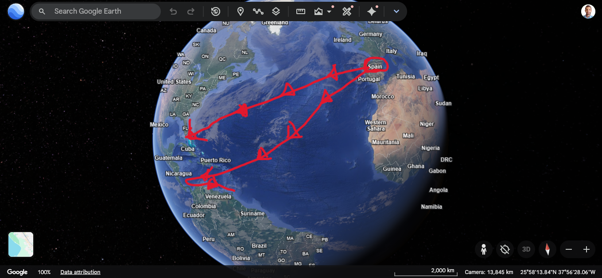

Quién era
Marino formado en el Mediterráneo y el Atlántico portugués. Vivió en Lisboa y más tarde en España. Estudió mapas, relatos de viajes y la distancia estimada hasta Cipango (Japón) y Catay (China).
Cristóbal Colón (en italiano, Cristoforo Colombo) nació hacia 1451 en Génova, una ciudad portuaria del Mediterráneo (hoy Italia). Fue navegante y cartógrafo. En el siglo XV, Europa comerciaba con Asia —especias, seda, oro— por rutas largas hacia el este. Colón propuso algo distinto: llegar a las Indias (Asia) navegando hacia el oeste, atravesando el océano Atlántico. La Tierra ya se sabía esférica; el error de Colón fue calcularla más pequeña de lo que es, así que no esperaba un continente en medio.
Marino formado en el Mediterráneo y el Atlántico portugués. Vivió en Lisboa y más tarde en España. Estudió mapas, relatos de viajes y la distancia estimada hasta Cipango (Japón) y Catay (China).
Pedir barcos para cruzar el Atlántico y abrir una ruta comercial a Asia. Primero lo presentó a Portugal, que lo rechazó: sus expertos juzgaron que el océano era más ancho de lo que Colón decía.
Los Reyes Católicos, Isabel I de Castilla y Fernando II de Aragón. En abril de 1492 firmaron las Capitulaciones de Santa Fe: Colón sería almirante, virrey y gobernador de las tierras que hallara, y recibiría parte de las riquezas.
Tres barcos salieron de Palos de la Frontera (Huelva) el 3 de agosto de 1492: la Niña, la Pinta y la Santa María (la mayor, naos y carabelas de vela). Hicieron escala en las islas Canarias y luego cruzaron el Atlántico.

Que las islas del Caribe eran las Indias orientales, cerca de Asia. Por eso llamó «indios» a sus habitantes y buscó oro, especias y una ruta hacia Cipango y el Gran Khan.
Un continente ya habitado por muchos pueblos (taínos, y más tarde otros en tierra firme). No era Asia. El nombre América vendrá después, por el navegante Américo Vespucio, que describió esas tierras como un mundo distinto.
Consecuencias: el viaje de 1492 abrió un contacto permanente entre Europa y América. Trajo mapas nuevos, plantas, animales y metales de un lado a otro, y también conquista, enfermedades (viruela y otras) y un descenso enorme de la población indígena. Colón no «encontró una tierra vacía»: llegó a un mundo que ya tenía sociedades, lenguas e historia propias.
1. ¿Dónde nació Colón?
2. Año aproximado de su nacimiento:
3. Colón era sobre todo…
4. Su plan era llegar a Asia…
5. ¿Quién financió el primer viaje?
6. Portugal, al principio…
7. Las Capitulaciones de Santa Fe se firmaron en…
8. Las tres naves de 1492 fueron…
9. El primer viaje salió de…
10. Fecha de salida (1492):
11. ¿Cuándo avistaron tierra?
12. La primera isla se llamaba…
13. Colón creía haber llegado a…
14. El pueblo que habitaba Guanahaní:
15. Con restos de la Santa María fundó…
16. ¿Cuántos viajes hizo Colón a América?
17. Colón murió en 1506 en…
18. Hasta el final de su vida, Colón…
19. Al llegar, América…
20. El nombre América viene de…